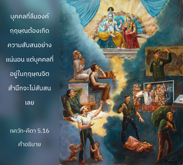

อย่างไรก็ดี เมื่อเขาได้รับแสงสว่างจากความรู้ซึ่งอวิชชาถูกทำลายลง ความรู้จะเปิดเผยทุกสิ่งทุกอย่าง เสมือนดังดวงอาทิตย์ที่บันดาลให้ทุกสิ่งทุกอย่างสว่างไสวขึ้นในเวลากลางวัน

บุคคลที่ลืมองค์กฺฤษฺณต้องเกิดความสับสนอย่างแน่นอน แต่บุคคลที่อยู่ในกฺฤษฺณจิตสำนึกจะไม่สับสนเลย ได้กล่าวไว้ใน ภควัท-คีตา ว่า สรฺวํ ชฺญาน-ปฺลเวน, ชฺญานาคฺนิห์ สรฺว-กรฺมาณิ และ น หิ ชฺญาเนน สทฺฤศมฺ ความรู้เป็นที่น่าสรรเสริญอย่างยิ่งเสมอ และความรู้นั้นคืออะไร ความรู้ที่สมบูรณ์ได้รับเมื่อเขาศิโรราบต่อองค์กฺฤษฺณ ดังที่ได้กล่าวไว้ในบทที่เจ็ด โศลกที่ 19 ว่า พหูนำ ชนฺมนามฺ อนฺเต ชฺญานวานฺ มำ ปฺรปทฺยเต หลังจากที่ได้ผ่านมาหลายต่อหลายชาติ เมื่อความรู้สมบูรณ์เขาจะศิโรราบต่อองค์กฺฤษฺณ หรือเมื่อมาถึงกฺฤษฺณจิตสำนึกทุกสิ่งทุกอย่างจะเปิดเผยต่อเขา เสมือนทุกสิ่งทุกอย่างที่สว่างไสวโดยพระอาทิตย์ในเวลากลางวัน สิ่งมีชีวิตสับสนในหลายๆ ด้าน ตัวอย่างเช่น เมื่อคิดอย่างไม่มีพิธีรีตองว่าตัวเขาเป็นองค์ภควานฺ เขาได้ตกลงสู่หลุมพรางสุดท้ายแห่งอวิชชา ความจริงแล้วหากสิ่งมีชีวิตเป็นองค์ภควานฺแล้วจะสับสนด้วยอวิชชาได้อย่างไร องค์ภควานฺทรงสับสนด้วยอวิชชาได้เช่นนั้นหรือ หากเป็นเช่นนั้นอวิชชา หรือซาตานก็ยิ่งใหญ่ไปกว่าองค์ภควานฺ ความรู้ที่แท้จริงรับได้จากบุคคลผู้อยู่ในกฺฤษฺณจิตสำนึกอย่างสมบูรณ์ ฉะนั้น เราต้องค้นหาพระอาจารย์ทิพย์ผู้เชื่อถือได้ และภายใต้การแนะนำของท่านเราจะเรียนรู้ว่า กฺฤษฺณจิตสำนึกคืออะไร เพราะกฺฤษฺณจิตสำนึกจะผลักดันอวิชชาทั้งหมดให้ออกไปอย่างแน่นอน เหมือนกับดวงอาทิตย์ที่ผลักดันความมืดได้ฉันใด แม้ว่าบุคคลอาจมีความรู้อย่างสมบูรณ์ว่าตัวเขาไม่ใช่ร่างกายแต่เป็นทิพย์เหนือร่างกายนี้ เขาอาจจะไม่สามารถแยกแยะระหว่างอนุวิญญาณและอภิวิญญาณได้ อย่างไรก็ดี เขาสามารถรู้ทุกสิ่งทุกอย่างได้เป็นอย่างดี หากยินดีไปพึ่งพระอาจารย์ทิพย์ผู้เชื่อถือได้ที่มีกฺฤษฺณจิตสำนึกอย่างสมบูรณ์ เขาสามารถรู้ถึงองค์ภควานฺ และความสัมพันธ์ของเขากับพระองค์ได้ เมื่อมาพบผู้แทนของพระองค์จริงๆ ผู้แทนขององค์ภควานฺจะไม่อ้างตนเองว่าเป็น ภควานฺ แม้ว่าผู้คนจะให้ความเคารพบูชาท่านทุกอย่างเสมือนดัง ภควานฺ เพราะว่าท่านมีความรู้แห่งองค์ภควานฺ เราต้องเรียนรู้ถึงข้อแตกต่างระหว่างองค์ภควานฺและสิ่งมีชีวิต ดังนั้น องค์ศฺรีกฺฤษฺณตรัสไว้ในบทที่สอง (2.12) ว่าสิ่งมีชีวิตทั้งหมดเป็นปัจเจกบุคคล และองค์ภควานฺก็ทรงเป็นปัจเจกบุคคลเช่นเดียวกัน พวกเขาเป็นปัจเจกบุคคลในอดีต เป็นปัจเจกบุคคลในปัจจุบัน และจะยังคงเป็นปัจเจกบุคคลต่อไปในอนาคต แม้หลังจากหลุดพ้นแล้ว ในเวลากลางคืนเราเห็นทุกสิ่งทุกอย่างเป็นหนึ่งเดียวกันอยู่ในความมืด แต่ในเวลากลางวันเมื่อพระอาทิตย์ขึ้นเราจะเห็นทุกสิ่งทุกอย่างตามรูปพรรณอันแท้จริงของทุกสิ่งทุกอย่าง รูปพรรณ และความเป็นปัจเจกบุคคลในชีวิตทิพย์ คือ ความรู้ที่แท้จริง